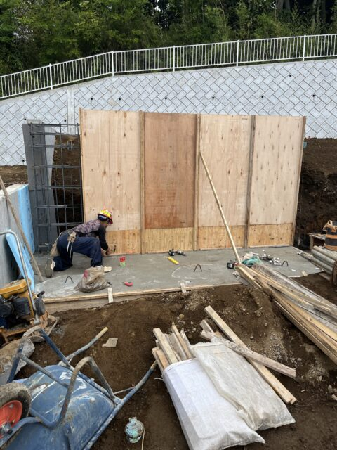

未経験からのスタート
外構職人
道具の持ち方から、隣で教えます。まずは現場の空気に慣れることから。学歴や前職は問いません。
見習い → 職人 → 一人前門、塀、アプローチ。家族が毎日くぐる場所を、神奈川で13年つくり続けてきました。合同会社一葉は、腕で勝負する外構工事の会社です。


一葉の仕事
外構は、家のいちばん外側にある仕事です。通りから家を見たとき、最初に目に入るのが門と塀。家に帰る家族が、毎日最初にくぐるのがアプローチです。
つまり俺たちがつくっているのは、ブロックやコンクリートではなく、その家の第一印象と、家族の毎日の通り道。だから一段も、一ミリも、手を抜けません。
積んだ一段は、この先何十年も、家族の帰り道に立ち続ける。

あの日の現場
止めるのは簡単だった。でも、引き渡しの日は決まっている。シートを張り、段取りを組み替え、雨の切れ間を読んで一工程ずつ前に進めた。
最後のブロックを積み終えたとき、胸に来たのは達成感より先に、深い安堵だった。あれは、腕の見せどころだったと思う。

神奈川で13年
建物は、いつか建て替えられることがあります。でも、しっかり基礎を打って積んだブロック塀は、驚くほど長くそこに残る。子どもが大きくなって、家族のかたちが変わっても、門だけは同じ場所で家を守っています。
現場の帰り道、昔手がけた塀の前を通りかかることがある。目地がまっすぐ通っているのを見ると、黙って少しだけ誇らしくなる。それがこの仕事です。
難しい現場ほど、面白い。
代表の言葉より
傾斜のきつい敷地。隣家との隙間が数十センチしかない境界。短い工期。図面どおりにはいかない現場ほど、職人の頭と手が試されます。
どう段取りを組むか、どこで工夫するか。自分の技術がなければ、この現場は終わらなかった。そう思える瞬間が、何よりの自信になる。毎日同じことの繰り返しではない、踏ん張る日も、穏やかに進める日もある。その波ごと楽しめるのが、この仕事の醍醐味です。

技術と気持ち
入社した日から上手な人はいません。道具の名前を覚え、モルタルの硬さを手で覚え、水糸一本の張り方で仕上がりが変わることを、現場で体に入れていく。
大事なのは、本気でこの仕事をやりたいと思えるかどうか。そして、いつかこの仕事を好きになってくれるかどうか。その気持ちさえあれば、技術は隣で全部見せます。
資材の運搬、掘削、片付け。現場の流れと道具の使い方を、先輩の隣で覚えていく時期。
丁張り、鉄筋、ベースコンクリート。見えなくなる部分こそ、仕上がりを決めることを知る。
水糸を張り、一段ずつ通りを合わせる。自分が積んだ塀が、初めて家の顔になる。
段取りから仕上げまで、現場を丸ごと預かる。施主様の「ありがとう」を正面で受け取る立場へ。
※期間は目安です。経験や習熟度に合わせて進めます。見習い期間（3か月）は日給9,000円、見習い期間終了後は日給10,000円〜です。
三つの現場を、同時に動かせる会社へ。
一葉はいま、次の段階に進もうとしています。目指すのは、7〜8人の職人で、3つの現場を同時に動かせるチーム。だからいま入る人は、その最初の仲間です。できあがった組織に入るのではなく、一緒に会社をつくっていく。そんな時期に立ち会えるのは、今だけです。
未経験からでも、経験を積んだ職人でも。それぞれの入り口から、一葉の柱になる道を用意しています。
道具の持ち方から、隣で教えます。まずは現場の空気に慣れることから。学歴や前職は問いません。
見習い → 職人 → 一人前腕に覚えのある方へ。あなたの技術を、一現場まるごと預ける形で活かしてください。
職人 → 職長 → 現場リーダーこれから増える現場を、代表と並んで動かす立場。段取り、施主様との打ち合わせ、若手の育成まで任せたいポジションです。
職長 → 現場責任者 → 会社の柱現場で積んだ経験を、資格という形で証明する道。ブロック建築技能士など、腕の証になる資格への挑戦を後押しします。
実務経験 → 資格取得 → 技能の証明「自分が積んだ塀の前で、施主さんが写真を撮ってくれた。」
初めて最初から最後まで任されたブロック塀でした。引き渡しの日、施主さんがスマホで門の写真を撮っていて、「家の顔ができた」と言ってくれた。帰りの車の中で、ずっとその言葉を思い出していました。
職人Aさん入社◯年目／前職：◯◯
「未経験の自分に、親方は一回もキレなかった。」
最初は水平器の見方もわからなかった。失敗した段を積み直すとき、親方は怒鳴るんじゃなくて、黙って横で一段積んで見せてくれた。あの背中を見て、この人の下で覚えたいと思いました。
職人Bさん入社◯年目／未経験から入社
「工期ギリギリの現場ほど、終わったあとの一服がうまい。」
段取りを何度も組み替えて、雨の切れ間を狙って仕上げた現場がありました。全部終わって片付けたあと、親方と缶コーヒーを飲みながら完成した門を眺めた時間。あれがあるから、またやれるんだと思います。
職長Cさん経験◯年／経験者として入社
※サンプル原稿：取材後に差し替え
MESSAGE 教えることから、逃げるつもりはありません。わからないことは、わかるまで何度でも説明します。そのうえで、現場では自分が先頭に立ってやって見せる。言葉と背中、その両方で受け取った技術は、きっと一生ものになると思っています。
正直、楽な仕事ではありません。雨の中で工期に追われることもあります。それでも、難しい現場を自分の腕でやり遂げたときの達成感は、ほかの仕事ではなかなか味わえないものです。穏やかに楽しく進められる日もある。毎日が同じではないところが、この仕事のいいところです。
経験はなくても大丈夫です。本気でこの仕事をやりたいと思える人、この仕事を好きになってくれる人と、一緒に汗をかきたい。何十年も残る家の顔を、一緒につくっていきましょう。
合同会社一葉 代表 小椋 智

話を聞くだけでも大丈夫です。応募フォーム、またはお電話でお気軽にご連絡ください。